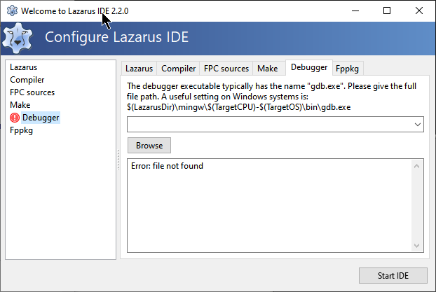
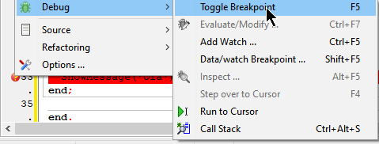

Dê olá ao FpDebug
Antes da versão 2.2, o Lazarus IDE utilizava a ferramenta GNU chamada GDB para depuração. A partir da versão 2.2, o Lazarus introduziu um debugger interno chamado FpDebug, que é amplamente considerado mais rápido e eficiente para o ecossistema Pascal.
A mudança para o FpDebug não é obrigatória, mas altamente recomendada. Caso o GDB não esteja instalado, você poderá ver advertências da IDE, mas elas podem ser ignoradas se você configurar o novo depurador interno.

Configurações Gerais do Debugger
Acesse o menu Tools -> Options -> Debugger -> General. Antigamente, o campo "Additional search path" precisava apontar para o gdb.exe, mas com o FpDebug, este campo pode permanecer em branco.

Algumas opções úteis para manter marcadas:
- Show message on stop with Error (Exit-code <> 0): Ajuda a identificar quando o programa terminou abruptamente. Programas que seguem o padrão POSIX retornam 0 em caso de sucesso; qualquer outro valor indica erro ou alerta.
- Automatically close the assembler windows, after source not found: Durante a depuração linha a linha (step-by-step), se a IDE não encontrar o código fonte, ela abrirá uma janela de assembly. Ativar esta opção evita janelas desnecessárias se você não pretende depurar em nível de instrução de processador.
Ativando o FpDebug
Para garantir que você está usando o novo motor de depuração, vá em Tools -> Options -> Debugger -> Debugger Backend. Se o FpDebug não estiver selecionado, clique em Add e escolha:
FPDebug Internal DWarf-debugger

Uma vez selecionado, as configurações padrão já são suficientes para a maioria dos projetos. Os Breakpoints (pontos de interrupção) continuam funcionando exatamente da mesma forma que nas versões anteriores.

Seja bem-vindo a uma depuração mais ágil e integrada com o FpDebug!
Fonte oficial: Lazarus Wiki - Debugger Setup